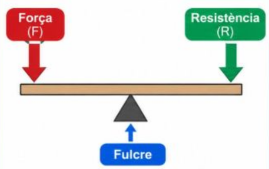
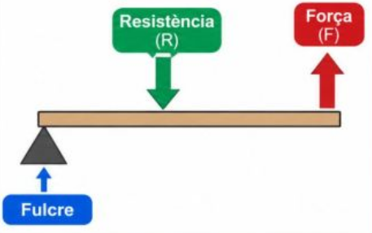
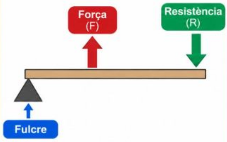

UP 1.1: Les Palanques
Selecciona la secció de treball per accedir als continguts teòrics, simuladors, exercicis i eines de repàs.
La Palanca i la seva Llei
Una de les màquines simples més antigues i utilitzades
Una palanca és una barra rígida que gira al voltant d'un punt de suport anomenat Fulcre (O)[cite: 5].
"Força per la seva distància és igual a Resistència per la seva distància."[cite: 5]
Els 3 Tipus de Palanques segons la posició:
Fulcre al mig
El punt de suport (O) queda entre la Força (F) i la Càrrega (R)[cite: 5].

Resistència al mig
La càrrega (R) es troba entre el punt de suport (O) i la Força (F)[cite: 5].

Força al mig
La nostra força (F) s'aplica entre el punt de suport (O) i la Càrrega (R)[cite: 5].
